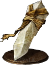

Items
Items Overview
Items can be found throughout the game on corpses with a shining white marker above them. Items are also purchasable from vendors. You can view all of your items by pressing Start, then selecting the Inventory box, which is the second from the left. From the Inventory screen, you can press the right or left bumpers (R1 and L1) to navigate between different categories of items. These categories include:
- Tools
- Materials
- Key Items
- Spells
- Melee Weapons
- Ranged Weapons
- Catalysts
- Shields
- Head
- Chest
- Hands
- Legs
- Arrows/Bolts
- Rings
- Covenants
Tools
Tools are your basic consumable items. Most tools can be used at any time to cause a certain effect to happen. For example: if you use the Firebomb tool, you will throw a Firebomb and the total number of Firebombs in your inventory will decrease by one.
Multiplayer Tools
Some tools are used specifically for connecting with other players, these are called Multiplayer Tools.
White Sign Soapstone
Buy this item from the Shrine Handmaiden for 500 souls. Use the White Sign Soapstone to leave a Summon Sign on the ground. Players in other games can activate your Summon Sign to summon you as a phantom in their world to help them progress through their game. If you find a Summon Sign in your own game, you can activate it to summon another player to help you progress through your own game.
Black Separation Crystal
Use the Black Separation Crystal to make friendly phantoms leave your world. Some paths are blocked if you have friendly phantoms in your world, so you may have to use this to progress. Cannot banish invading phantoms.
Embers
Whenever you use an Ember (or whenever you kill a boss), your character will go into the Embered state until they die. While Embered, your character will have increased HP, added particle effects on their clothing, and the ability to summon other players who have left their Summon Sign down. Beware though, Embering and summoning phantoms to help will increase the chance of an invading player to enter your world and try to kill you.
Cracked Red Eye Orbs/Red Eye Orb
When used, Red Eye Orbs will cause you to invade another player's world in an attempt to kill them. Cracked Red Eye Orbs can only be used once, but once you get a full Red Eye Orb you can invade an unlimited number of times.
Materials
Upgrade materials such as Titanite Shards.
Key Items
Keys, Spell tomes, and other items needed to progress in the game. Check their descriptions to figure out what you need to do with them.
Spells
Spells you've found or bought. Check their descriptions to figure out what they do.

Melee Weapons
If you can swing it, it's a Meelee Weapon. You can check its Scaling and Attribute Requirements by hovering over it. Check the description to figure out if it has any special effects and what its Weapon Art does.
Ranged Weapons
Bows, Crossbows and Greatbows. Check their descriptions to figure out what their Weapon Arts do.
Catalysts
Items used to cast spells. Check their descriptions to figure out which spells they can cast, and whether they have any special effects.
Shields
If you can use it to block or parry, it'll show up in this tab. You can check whether the Shield parries or just uses the right hand weapon's Weapon Art by checking the description.
Head
Armor for your head.

Chest
Armor for your chest.
Hands
Armor for your hands.
Legs
Armor for your legs.
Arrows/Bolts
Arrows can only be shot from Bows. Bolts can only be shot from Crossbows. Greatarrows can only be shot from Greatbows.
Rings
Rings provide additional effects when equipped. You can have up to 4 rings equipped at a time.